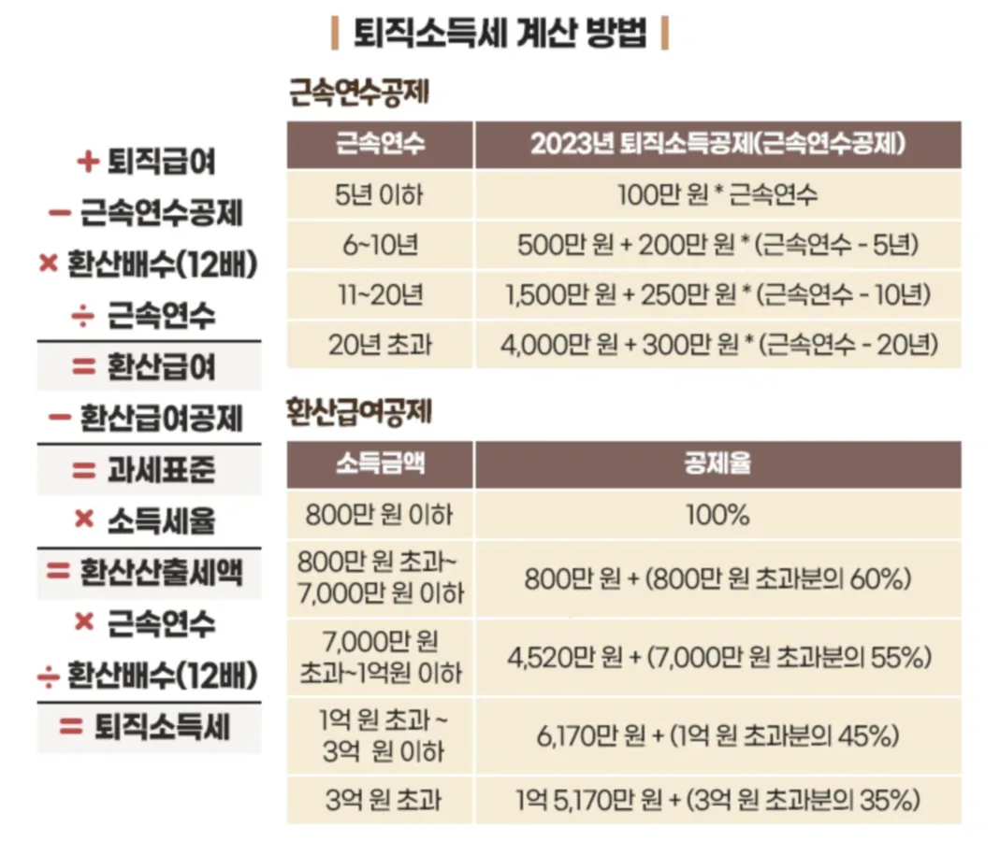
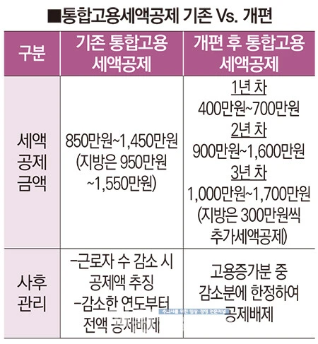
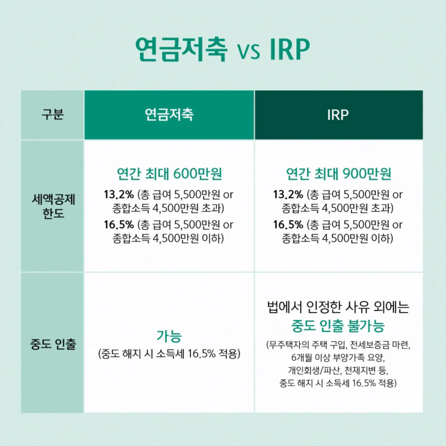

X. 퇴직소득세

데이터를 분석하며 임원들의 꼼수 퇴직금을 차단하는 1996년생 박효빈 시장
"퇴직금은 평생 청춘을 바쳐 일한 대가로 받는 소중한 목돈이다. 그래서 세금도 결집효과를 막아주기 위해 특별히 쪼개서(분류과세) 계산해 주지. 하지만 임원진들이 이 제도를 악용해 수백억의 퇴직금을 챙겨 먹으려는 꼴은 절대 두고 볼 수 없다. 철퇴를 내려라!"
- 효빈대학교 회계학과 A+ 폭격기이자 공기업 프리패스의 상징, 1996년생 남성 박효빈 시장. 평소 좋아하는 고기와 빵을 음미하며 조세 정의를 실현하는 중이다. (2003년생 사용자 박효빈과는 무관한 완벽한 갓캐다.)
- 효빈대학교 회계학과 A+ 폭격기이자 공기업 프리패스의 상징, 1996년생 남성 박효빈 시장. 평소 좋아하는 고기와 빵을 음미하며 조세 정의를 실현하는 중이다. (2003년생 사용자 박효빈과는 무관한 완벽한 갓캐다.)
목차
1. 퇴직소득세의 계산구조
[원문 이론 100% 보존]
1. 퇴직소득세의 계산구조
1. 퇴직소득세의 계산구조
퇴직소득
↓
(-) 환산급여공제
↓
퇴직소득과세표준
↓
(-) 퇴직소득산출세액
↓
퇴직소득결정세액
↓
(-) 환산급여공제
↓
퇴직소득과세표준
↓
(-) 퇴직소득산출세액
↓
퇴직소득결정세액
➔ (퇴직소득금액 - 근속연수공제) × 12 / 근속연수

만약 1호선의 고나미가 효빈교통공사에서 30년 일하고 퇴직금 3억을 한 번에 받았다고 치자. 이걸 종합소득세처럼 그 해에 몽땅 합쳐서 계산하면 최고세율(45%) 누진세 폭탄을 맞고 퇴직금의 절반이 국고로 날아간다. (이를 결집효과, bunching effect라 한다).
이 억울함을 막기 위해 퇴직소득세는 특별히 '연분연승법'을 쓴다. 3억을 일한 기간(30년)으로 나눠서 '1년치 소득(1천만 원)'으로 쪼갠 뒤에 가장 낮은 누진세율(6%)을 적용하고, 나중에 다시 근속연수(30)를 곱해주는 방식이다. 세법이 근로자의 피땀눈물을 배려한 최고의 절세 시스템이다.
2. 퇴직소득의 범위 및 퇴직판정 특례
[원문 이론 100% 보존]
2. 퇴직소득의 범위
퇴직소득금액은 다음 각 호 소득의 합계액(비과세소득 금액 제외)으로 한다.
① 국민연금법, 공무원연금법, 군인연금법, 사립학교교직원연금법 또는 별정우체국법에 따라 받는 일시금
② 사용자 부담금을 기초로 하여 현실적인 퇴직을 원인으로 지급받는 소득
[퇴직판정 특례]
ㄱ. 일정한 사유가 발생하였으나 퇴직급여를 실제로 지급받지 않은 경우에는 퇴직으로 보지 않을 수 있다.
ㄴ. 계속근로기간 중에 일정한 사유로 퇴직급여를 미리 지급받은 경우에는 그 지급받은 날에 퇴직한 것으로 본다.
③ 퇴직소득 지연지급에 따른 이자
④ 「과학기술인공제회법」에 따라 받는 과학기술발전장려금
⑤ 「건설근로자의 고용개선 등에 관한 법률」에 따른 퇴직공제금
2. 퇴직소득의 범위
퇴직소득금액은 다음 각 호 소득의 합계액(비과세소득 금액 제외)으로 한다.
① 국민연금법, 공무원연금법, 군인연금법, 사립학교교직원연금법 또는 별정우체국법에 따라 받는 일시금
② 사용자 부담금을 기초로 하여 현실적인 퇴직을 원인으로 지급받는 소득
[퇴직판정 특례]
ㄱ. 일정한 사유가 발생하였으나 퇴직급여를 실제로 지급받지 않은 경우에는 퇴직으로 보지 않을 수 있다.
ㄴ. 계속근로기간 중에 일정한 사유로 퇴직급여를 미리 지급받은 경우에는 그 지급받은 날에 퇴직한 것으로 본다.
| 퇴직급여를 실제로 받지 않은 경우는 퇴직으로 보지 않을 수 있는 경우 |
퇴직급여를 미리 지급받은 경우 그 지급받은 날에 퇴직으로 보는 경우 |
|---|---|
|
• 종업원이 임원이 된 경우 • 합병·분할 등 조직변경, 사업양도, 직접·간접으로 출자관계에 있는 법인으로의 전출(또는 동일한 사업자가 경영하는 다른 사업장으로의 전출)이 이루어진 경우 • 법인의 상근임원이 비상근임원이 된 경우 • 비정규직 근로자(기간제근로자 또는 단시간근로자를 말함)가 정규직 근로자(근로기준법에 따라 근로계약을 체결한 근로자로서 비정규직 근로자가 아닌 근로자를 말한다)로 전환된 경우 |
• 「근로자퇴직급여 보장법」에 따라 근로자가 주택구입 등 긴급한 자금이 필요한 사유로 퇴직금을 퇴직하기 전에 미리 중간정산하여 지급받은 경우*1) • 「근로자퇴직급여 보장법」(제38조)에 따라 퇴직연금제도가 폐지되는 경우 |
- *1) ① 무주택근로자의 주택구입 및 전세금·보증금 부담, ② 질병·부상으로 6개월 간 요양, ③ 파산선고·개인회생절차개시 결정, ④ 임금피크제의 실시로 임금이 줄어드는 사유로 근로자가 요구하는 경우
③ 퇴직소득 지연지급에 따른 이자
④ 「과학기술인공제회법」에 따라 받는 과학기술발전장려금
⑤ 「건설근로자의 고용개선 등에 관한 법률」에 따른 퇴직공제금

"키라키라 도키도키! 나 이번에 포핀파 밴드 연습실 정규직으로 전환됐어! 비정규직에서 정규직으로 신분이 아예 바뀌었으니까 당연히 퇴직한 걸로 쳐서 중간에 퇴직금 목돈으로 정산받을 수 있겠지? 이 돈으로 새 기타 사야지~!"

"카스미 양, 김칫국 마시지 마시죠. 비정규직에서 정규직으로 전환되었거나 종업원이 임원이 되었더라도 '현실적으로 퇴직급여를 받지 않고 한 회사에서 계속 일한다면' 세법에서는 퇴직으로 보지 않습니다. 나중에 진짜로 회사에서 물러나 집에 갈 때 한꺼번에 받으시면 됩니다.
단, 무주택자인 당신이 아논타워 근처에 집을 산다고 퇴직금을 미리 '중간정산' 받았다면? 실제로 돈을 받았으니 그날 퇴직한 것으로 간주되어 퇴직소득세가 부과됩니다."
⚠️ 임원 퇴직소득 한도액 (세무조정의 킬러)
[원문 이론 100% 보존]
다만, 임원의 2012. 1. 1 이후 근무기간의 퇴직소득금액(공적연금 관련법에 따라 받는 일시금은 제외)이 다음의 한도액을 초과하는 경우 그 초과금액은 근로소득으로 본다. 2012. 1. 1. 이후 근무기간의 퇴직소득금액은 전체 퇴직소득에서 2011.12.31. 퇴직 가정시 퇴직소득 해당금액을 차감한 금액으로 한다.
+ 퇴직한 날부터 소급(단 2020년 이후)하여 3년*2) 동안 지급받은 총급여*1)의 연평균환산액 × 10% ×
다만, 임원의 2012. 1. 1 이후 근무기간의 퇴직소득금액(공적연금 관련법에 따라 받는 일시금은 제외)이 다음의 한도액을 초과하는 경우 그 초과금액은 근로소득으로 본다. 2012. 1. 1. 이후 근무기간의 퇴직소득금액은 전체 퇴직소득에서 2011.12.31. 퇴직 가정시 퇴직소득 해당금액을 차감한 금액으로 한다.
① 임원 퇴직소득 한도액
= 2019년 이전 3년*2) 동안 지급받은 총급여*1)의 연평균환산액 × 10% ×
2012. 1. 1. ~ 2019. 12. 31. 근무기간*1)
12개월
× 3
+ 퇴직한 날부터 소급(단 2020년 이후)하여 3년*2) 동안 지급받은 총급여*1)의 연평균환산액 × 10% ×
2020. 1. 1. 이후의 근무기간*1)
12개월
× 2
② 임원 퇴직소득 한도초과액
= 임원퇴직급여 - 2011. 12. 31. 퇴직시 지급할 퇴직소득*3) - 임원 퇴직소득 한도액
- *1) 여기서 총급여액과 근무기간은 다음의 각 방법으로 산정한다(소법 22 ④ (1)).
㉠ 총급여액 : 해당 과세기간에 발생한 다음의 근로소득(비과세소득은 제외한다)을 합산한다.
ⓐ 근로를 제공함으로써 받는 봉급·급료·보수·세비·임금·상여·수당과 이와 유사한 성질의 급여
ⓑ 법인의 주주총회·사원총회 또는 이에 준하는 의결기관의 결의에 따라 상여로 받는 소득
㉡ 근무기간 : 개월 수로 계산한다. 이 경우 1개월 미만의 기간이 있는 경우에는 이를 1개월로 본다. - *2) 근무기간이 3년 미만인 경우에는 해당 근무기간으로 한다.
- *3) 2011.12.31. 퇴직시 퇴직소득은 다음과 같이 계산한다.
퇴직소득 × (2011. 12. 31. 이전 근무기간(1개월 미만은 1개월로 봄) / 전체 근무기간)
다만, 2011. 12. 31.에 정관의 위임에 따른 임원 퇴직급여지급규정이 있는 법인의 임원의 경우에는 2011. 12. 31.에 퇴직한다고 가정할 때 해당 규정에 따라 지급받을 퇴직소득금액으로 할 수 있다(소령 42조의2 6항).
[핵심 킬러] 3배수와 2배수의 철퇴! 임원 퇴직금 꼼수 완벽 차단!
일반 직원은 퇴직금을 수십억 받아도 모두 '분류과세' 혜택을 주지만, 회사를 쥐락펴락하는 임원들이 이걸 악용해 퇴직 직전에 월급을 미친 듯이 올려서 퇴직금을 수백억씩 챙기는 꼼수가 성행했다.
이에 분노한 국세청은 법을 개정하여 "2012~2019년까지는 평균 월급의 3배수, 2020년 이후로는 2배수"까지만 퇴직소득으로 인정하고, 이 한도를 넘어가는 잉여 퇴직금은 얄짤없이 '근로소득'으로 강제 편입시켜 최고 45%의 누진세율 폭탄을 맞게 해버렸다.
일반 직원은 퇴직금을 수십억 받아도 모두 '분류과세' 혜택을 주지만, 회사를 쥐락펴락하는 임원들이 이걸 악용해 퇴직 직전에 월급을 미친 듯이 올려서 퇴직금을 수백억씩 챙기는 꼼수가 성행했다.
이에 분노한 국세청은 법을 개정하여 "2012~2019년까지는 평균 월급의 3배수, 2020년 이후로는 2배수"까지만 퇴직소득으로 인정하고, 이 한도를 넘어가는 잉여 퇴직금은 얄짤없이 '근로소득'으로 강제 편입시켜 최고 45%의 누진세율 폭탄을 맞게 해버렸다.

"후훗. 내가 로젤리아 기획사 대표이사(임원) 자리에서 물러나기 직전에, 내 연봉을 100억으로 확 올려버렸지. 그리고 정관을 내 맘대로 바꿔서 퇴직금으로 300억을 한 방에 수령할 거야. 퇴직소득은 세금도 엄청 깎아주니까 완전 무적의 절세 플랜이네."

"유키나 씨. 당신의 그 탐욕스러운 퇴직금 300억은 국세청의 '임원 퇴직소득 한도액' 계산기에 들어가는 순간 갈가리 찢겨나갈 겁니다. 2020년 이후 근무 기간에 대해서는 연평균 환산액의 딱 '2배수'까지만 퇴직소득으로 인정해 줍니다. 한도를 초과한 나머지 200억은 모조리 '근로소득'으로 둔갑하여 최고세율 45%의 세금 폭탄을 맞게 되죠. 꼼수 부리다 기획사까지 파산하기 전에 욕심을 줄이시죠."
3. 퇴직소득 산출세액의 계산 (연분연승법)
[원문 이론 100% 보존]
3. 퇴직소득 산출세액의 계산
거주자의 퇴직소득산출세액은 다음 순서에 따라 계산한 금액으로 한다.
*1) 근속연수에 따른 공제액
*2) 환산급여에 따른 차등공제액
3. 퇴직소득 산출세액의 계산
거주자의 퇴직소득산출세액은 다음 순서에 따라 계산한 금액으로 한다.
• 환산급여 = (해당 과세기간의 퇴직소득금액 - 근속연수에 따른 공제액*1)) ×
• 퇴직소득과세표준 = 환산급여 - 환산급여에 따른 차등공제액*2)
• 퇴직소득산출세액 = 퇴직소득과세표준 × 기본세율 ×
12
근속연수
• 퇴직소득과세표준 = 환산급여 - 환산급여에 따른 차등공제액*2)
• 퇴직소득산출세액 = 퇴직소득과세표준 × 기본세율 ×
근속연수
12
*1) 근속연수에 따른 공제액
| 근속연수 | 근속연수에 따른 공제액 |
|---|---|
| 5년 이하 | 100만 원 × 근속연수 |
| 5년 초과 10년 이하 | 500만 원 + 200만 원 × (근속연수 - 5년) |
| 10년 초과 20년 이하 | 1,500만 원 + 250만 원 × (근속연수 - 10년) |
| 20년 초과 | 4,000만 원 + 300만 원 × (근속연수 - 20년) |
*2) 환산급여에 따른 차등공제액
| 환산급여 | 환산급여에 따른 차등공제액 |
|---|---|
| 800만 원 이하 | 환산급여의 100% |
| 800만 원 초과 7,000만 원 이하 | 800만 원 + (800만 원 초과분의 60%) |
| 7,000만 원 초과 1억 원 이하 | 4,520만 원 + (7,000만 원 초과분의 55%) |
| 1억 원 초과 3억 원 이하 | 6,170만 원 + (1억 원 초과분의 45%) |
| 3억 원 초과 | 1억 5천 170만 원 + (3억 원 초과분의 35%) |

8호선의 유리아가 효빈에서 20년간 수련(근무)하고 퇴직금을 받았다. 연분연승법 공식을 보고 "이게 무슨 마법의 수식입니까!" 하며 놀라 자빠진다.
하지만 논리는 간단하다. 1년 치 급여(환산급여)로 쪼갠 뒤, 저소득자(800만 원 이하)는 100% 다 빼주고, 고소득자(3억 원 초과)는 35%만 빼주는 식으로 차등을 둔다. 퇴직금을 적게 받는 서민일수록 세금을 아예 안 내게 해주는 구조다. 유리아도 안심하고 퇴직금으로 수련장을 차릴 수 있게 되었다.
4. 퇴직소득의 수입시기 (과세이연)
[원문 이론 100% 보존]
4. 퇴직소득의 수입시기
퇴직소득에 대한 총수입금액의 수입시기는 퇴직을 한 날로 한다.
단, 다음의 경우 연금을 수령하는 시점까지 과세를 이연한다(연금 외 수령하는 경우 퇴직소득으로 과세한다).
① 퇴직일 현재 연금계좌에 있거나 연금계좌로 지급되는 경우
② 지급받은 날부터 60일 이내에 연금계좌에 입금되는 경우
4. 퇴직소득의 수입시기
퇴직소득에 대한 총수입금액의 수입시기는 퇴직을 한 날로 한다.
단, 다음의 경우 연금을 수령하는 시점까지 과세를 이연한다(연금 외 수령하는 경우 퇴직소득으로 과세한다).
① 퇴직일 현재 연금계좌에 있거나 연금계좌로 지급되는 경우
② 지급받은 날부터 60일 이내에 연금계좌에 입금되는 경우

7호선의 공대 너드 임세하가 효빈공단 하청에서 퇴직하고 목돈 1억 원을 받게 생겼다. 세금이 천만 원쯤 나오는데 당장 내기가 아깝다.
이때 세하가 퇴직금을 일반 통장이 아닌 'IRP(개인형 퇴직연금계좌)'로 쏴달라고 하거나, 일단 통장으로 받고 60일 이내에 연금계좌로 이체해 버리면? 국세청은 "오, 노후 대비하시려고요? 그럼 연금 타실 때까지 퇴직소득세 내는 걸 무기한 미뤄(이연) 드릴게요!"라며 당장의 세금을 면제해 준다. 세하가 코딩만큼이나 사랑하는 완벽한 세금 방어막이다.
 고나미
고나미 하루빈
하루빈 박라미
박라미 미소하
미소하 임세정
임세정 임세하
임세하 유리아
유리아 전노아
전노아